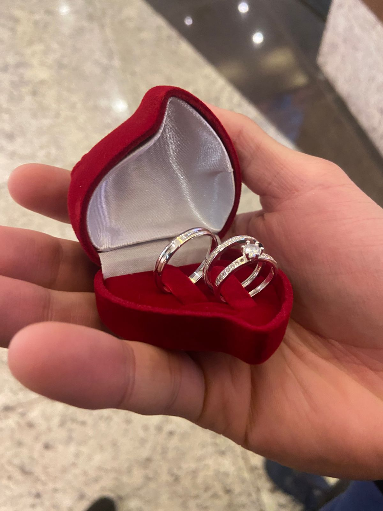
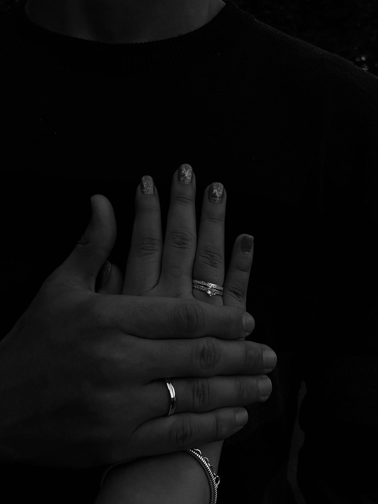
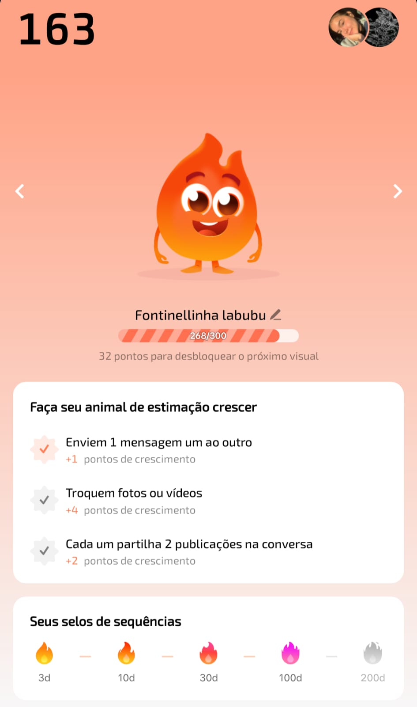

Meu amor, quis criar algo que fosse só nosso. Um lugarzinho que guardasse a luz que você guia para a minha vida. Você é meu girassol.
Nossos Marcos
Construindo nossa história há...
(Desde 14 de Junho de 2025)
0Dias
0Horas
0Min
0Seg
Nosso "Sim" oficial há...
(Desde 16 de Agosto de 2025)
0Dias
0Horas
0Min
0Seg
Um dos infinitos motivos...
... pelos quais eu a amo:
Aquele Vídeo
Cada dia que você filmou sua mão... você estava esperando por mim, e eu estava esperando por você. O final desse vídeo é o começo do verdadeiro tudo entre nós.
O Símbolo do Nosso 'Sim'


Nossa Chama
Nossa "Fontinellinha labubu" ❤️🔥

Cuidando um do outro, todos os dias.
Nossa Galeria
♡
Meu amor, minha vida. Você é a mulher mais forte, carinhosa e maravilhosa que eu já conheci. Na saúde e na doença, na alegria e na tristeza, eu não vou apenas estar aqui, eu vou lutar com você e por você, pelo mais eterno sempre.
Eu te amo mais do que as palavras podem dizer.
Com todo o meu coração,
Fontenelle
×
Minha carta para você, Sâmy
Meu amor,
Se você está lendo isso, é porque aquele primeiro botão te trouxe até aqui. Mas a verdade é que cada dia ao seu lado é como clicar em um botão que me leva para um lugar mais feliz.
Eu sei que as coisas não estão fáceis. Eu sei que a preocupação existe, e que às vezes o medo tenta ser maior que a esperança. É por isso que eu fiz isso. Eu queria te lembrar, de um jeito que fosse só nosso, de tudo que a gente é.
Você é o meu girassol. Mesmo nos dias nublados, você me ensina a procurar a luz. Você é a minha força, a minha inspiração e meu porto seguro.
Eu te amo. Não só por me tornar uma pessoa melhor quando está comigo, mas pela menina maravilhosa que você é. Eu te amo pela sua força em dias difíceis e pelo seu sorriso em dias bons.
Eu estou aqui. Segurando sua mão, hoje e sempre. Nós vamos passar por qualquer obstáculo, juntos. Você, nós, somos mais fortes do que qualquer coisa que tente nos derrotar.